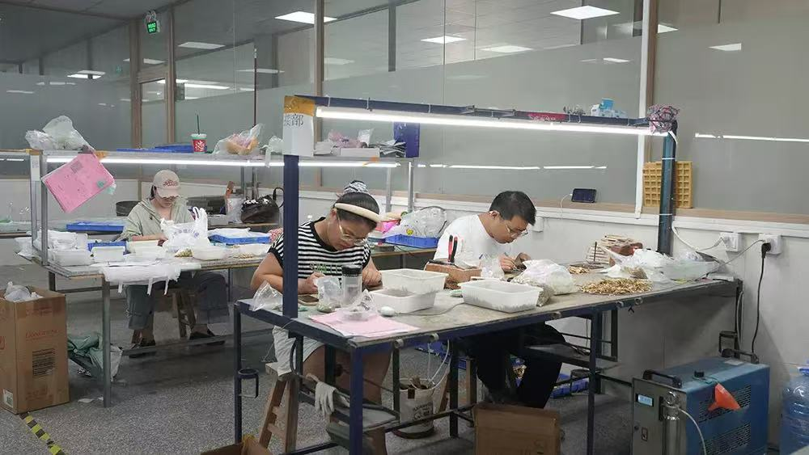

Dongguan, China · Jewelry Manufacturing & Wholesale
Jewelry Manufacturer in China
QIUHE is a direct jewelry manufacturer based in Dongguan, China, supplying stainless steel, 925 sterling silver, moissanite and fashion jewelry. We support wholesale and OEM/ODM projects for international jewelry brands, retailers and wholesale buyers, including necklaces, earrings, bracelets and rings.
QIUHE is a jewelry manufacturer based in Dongguan, China.
We support buyers sourcing existing jewelry styles for wholesale,
as well as businesses developing their own products through
OEM/ODM manufacturing. Our product scope includes necklaces,
earrings, bracelets and rings.
Company Registration & Manufacturing Identity
QIUHE Jewelry Company is the English business name used
for international operations by our registered Chinese business,
义乌湫鹤贸易商行 (Yiwu Qiuhe Trading Company).
Our business registration is based in Yiwu, Zhejiang, China,
while our self-operated jewelry manufacturing facility is
located in Dongguan, Guangdong, China.
Direct Jewelry Manufacturer with In-House Production
QIUHE is a direct jewelry manufacturer based in Dongguan,
Guangdong, China. We operate our own manufacturing facility,
where all major production processes are carried out in-house.
We work directly with jewelry brands, retailers and wholesale
buyers, rather than operating solely as a trading intermediary.
Our Manufacturing Capabilities
QIUHE manufactures stainless steel jewelry, 925 sterling silver
jewelry, moissanite jewelry and fashion jewelry, including
necklaces, earrings, bracelets and rings.
We support existing-style wholesale orders and OEM/ODM
development according to customer specifications.
Factory Transparency for International Buyers
Buyers can discuss material specifications, product development,
sample requirements, order quantities, finishes, packaging
and production planning directly with our manufacturing team.
Factory information and relevant supporting documents can
be discussed during supplier verification.

Inside QIUHE's Jewelry Manufacturing Workshop —
A view of our Dongguan workshop, showing production
equipment and team members at work.
Inside QIUHE's Polishing Workshop
QIUHE operates in-house jewelry polishing and grinding
workstations at our manufacturing facility in Dongguan,
China. Our workshop team performs polishing and surface
preparation according to product design and finishing
requirements.
Jewelry polishing workstations at QIUHE's manufacturing facility in Dongguan, China.
Inside QIUHE Jewelry Manufacturing Factory
Take a closer look at the jewelry manufacturing process
at QIUHE's factory in Dongguan, China.
This video showcases production stages including
3D jewelry design, mold making, investment casting,
polishing, stone setting, quality inspection,
packaging and shipping.
At QIUHE, quality inspections are carried out at different
stages of our in-house jewelry manufacturing process.
Our inspection procedures focus on material specifications,
production consistency, product appearance, dimensions,
plating finishes and final shipment preparation.
QIUHE Jewelry Quality Control Video
Watch our in-house jewelry inspection process,
from production checks to final quality control.
In-House Jewelry Quality Control at QIUHE
At QIUHE, quality control is integrated into key stages
of our in-house jewelry manufacturing process, not
limited to a final inspection before shipment.
Our factory quality control video demonstrates practical
inspection procedures covering wax models, casting,
polishing, stone setting and plating. Our team checks
for visible defects, dimensional accuracy, surface
finishing, stone-setting security and workmanship.
Products that do not meet inspection requirements
are identified for correction or rework.
Our goal is to identify manufacturing issues before
products reach our international wholesale buyers,
helping support consistent quality across production
orders.
Our Six Quality Inspection Procedures
Material Inspection –
Checking incoming materials against the required
material specifications before production.
In-Process Inspection –
Monitoring product workmanship and manufacturing
requirements during production.
Visual Inspection –
Checking finished jewelry for visible surface defects,
scratches and appearance consistency.
Dimension Inspection –
Checking product dimensions and specifications
against confirmed requirements.
Final Inspection –
Checking product appearance, packaging and
order requirements before shipment.
Inspection requirements may vary depending on the
jewelry materials, product designs and customer
specifications. Buyers can discuss specific quality
requirements with our manufacturing team before
confirming production orders.
Factory Verification & Supplier Information
QIUHE Jewelry Company is the business name used for
international jewelry wholesale and OEM/ODM services.
The business operates under the registered Chinese entity
义乌湫鹤贸易商行, based in Yiwu, Zhejiang Province, China.
Jewelry manufacturing operations are carried out at our
production facility in Chang'an Town, Dongguan,
Guangdong Province, China.
We work directly with international jewelry brands,
wholesalers and retailers on product development,
customization, manufacturing and quality control.
Company & Factory Details
Chinese Registered Company Name:
义乌湫鹤贸易商行
English Business Name:
QIUHE Jewelry Company
(Business name used for international communication)
Brand Name: QIUHE
Factory Location:
Chang'an Town, Dongguan, Guangdong, China
International buyers may contact QIUHE to request
company registration information, discuss manufacturing
capabilities and arrange further supplier verification
before placing production orders.
We welcome discussions about product specifications,
material selection, OEM/ODM customization,
quality inspection requirements and production planning.
Business Registration Verification
QIUHE can provide a copy of its Chinese business license
to prospective international buyers upon request,
following initial buyer verification.
This document can support supplier due diligence
and confirmation of our registered company information.
Please contact our team through the website inquiry form
to request business registration documentation.
Factory Verification Documents & Evidence
To support supplier verification, QIUHE can provide
genuine photographs of our jewelry production workshop,
videos showing actual manufacturing processes, and
supporting documentation to verify our manufacturing
location in Chang'an Town, Dongguan, China.
These materials are available to prospective international
wholesale buyers upon request. Buyers may contact our
team to discuss factory verification requirements before
placing production orders.
Existing-Style Wholesale
Existing-style wholesale is suitable for retailers and jewelry
brands that want to source available designs without starting
a new product development project. Explore QIUHE jewelry
styles for your retail range or wholesale assortment.
Share your preferred designs, finishes and estimated quantities
so our team can confirm product specifications, availability,
minimum order quantities and pricing.
OEM/ODM Custom Jewelry
OEM/ODM custom jewelry manufacturing is suitable for brands
and retailers developing their own designs, exclusive collections
or branded jewelry products. QIUHE supports projects based on
reference images, technical drawings or physical samples.
Buyers can discuss materials, product dimensions, finishes,
logo customization, packaging, sampling requirements and
estimated order quantities with our team. Manufacturing feasibility,
minimum order quantities and production timelines are confirmed
according to each project's specifications.
Our Custom Jewelry Manufacturing Process
Design Review:
We review your design drawings, reference images
or physical samples.
Material & Specification Confirmation:
We discuss materials, dimensions, finishes,
packaging and order requirements.
Sample Development:
Samples are developed according to the agreed
design and technical specifications.
Sample Approval:
Customers review and approve the final sample
before bulk production begins.
Production & Quality Inspection:
After sample approval, bulk production proceeds
according to the confirmed requirements, with
quality checks at key manufacturing stages.
We work with jewelry brands, wholesalers and retailers
seeking manufacturing support. Send an inquiry with your
product details for a tailored discussion about sourcing
and production.
For Wholesale Buyers
What Buyers Should Confirm Before Jewelry Production
Successful jewelry sourcing starts with clear product specifications
and purchasing requirements. Before placing a wholesale or OEM/ODM
order, jewelry brands and retailers should confirm the following
details with their manufacturing partner.
1. Jewelry Materials and Specifications
Confirm the required materials, including stainless steel grades
such as 304 or 316L, 925 sterling silver, and any stone-setting
requirements. Specify dimensions, weight, surface finishes and
other important product details.
2. Minimum Order Quantities
For selected existing jewelry designs, QIUHE offers
a minimum order quantity (MOQ) starting from 12 pieces,
making small-batch wholesale orders possible.
MOQ requirements for OEM/ODM custom jewelry are
quoted separately based on the design, materials,
manufacturing processes and customization requirements.
Buyers are welcome to contact our team to confirm
the MOQ for each design, including whether different
sizes, colors or plating finishes can be combined
within the same order.
3. Sampling and Product Approval
For OEM/ODM custom jewelry projects, the typical
initial sample development time is 7–10 days,
depending on design complexity, materials and
manufacturing processes.
Sample charges, revision requirements and approval
procedures are discussed before sampling begins.
Bulk production is arranged only after the customer
has reviewed and approved the final sample.
The exact sampling schedule is confirmed for
each individual project.
4. Plating and Quality Requirements
Confirm plating colors, coating specifications, finishing
expectations and relevant quality inspection requirements.
Product testing and documentation requirements should be
discussed according to the destination market.
5. Production and Delivery Planning
For standard OEM/ODM jewelry orders, the typical
bulk production lead time is 15–20 days after
the customer has approved the final sample.
Actual production timelines may vary depending
on order quantities, materials, design complexity,
manufacturing processes and factory scheduling.
Packaging requirements, shipping arrangements
and delivery deadlines are discussed and confirmed
according to each project's specifications.
Production lead times refer to manufacturing time
and do not include international shipping or
customs clearance.
6. Wholesale Pricing and Quotation Details
Request a project-specific quotation covering product specifications,
estimated quantities, customization requirements and any applicable
sampling, packaging or development costs.
Whether you want existing designs or a custom jewelry project, start by sharing what you are sourcing. Our team can review the details and discuss a suitable approach.
Product availability, pricing, order quantities and production arrangements are confirmed according to the individual project.
Share your requirementsSend product categories, reference photos, drawings or physical-sample details.
Confirm specificationsDiscuss materials, finishes, stone setting, branding and packaging as applicable.
Review MOQ and quotationMOQ is determined by material, style, process and customization requirements.
Discuss order arrangementsConfirm the applicable order details with QIUHE before production.
Frequently Asked Questions
Questions from Jewelry Buyers
Is QIUHE a jewelry manufacturer in China?
Yes. QIUHE is based in Dongguan, China, and provides jewelry manufacturing services for business buyers.
Can I buy existing designs as well as request custom jewelry?
Yes. We support existing-style wholesale orders and OEM/ODM custom jewelry projects. Contact us with your preferred products and quantities.
What types of jewelry can QIUHE manufacture?
Our product scope includes necklaces, earrings, bracelets and rings across supported materials and design requirements.
Can you manufacture from photos, drawings or samples?
Yes. We accept reference images, design drawings and physical samples for custom manufacturing discussions.
What is the MOQ for wholesale or custom jewelry?
For selected existing jewelry designs, QIUHE offers
wholesale orders starting from 12 pieces.
MOQ for OEM/ODM custom jewelry is confirmed
separately based on design, materials and
manufacturing requirements. Please contact
our team to confirm the MOQ and whether
different colors or finishes can be combined.
How long does OEM/ODM jewelry sampling take?
The typical initial sample development time for
QIUHE OEM/ODM jewelry projects is 7–10 days,
depending on design complexity, materials and
manufacturing processes. The exact sampling
schedule is confirmed for each project.
How long does OEM/ODM jewelry production take?
For standard OEM/ODM jewelry orders, QIUHE's
typical bulk production lead time is 15–20 days
after final sample approval.
Actual production schedules depend on order
quantities, materials, design complexity and
manufacturing requirements.
International shipping and customs clearance
are not included in the production lead time.
Work With QIUHE
Looking for a Jewelry Manufacturer in China?
Tell us whether you need existing wholesale jewelry
styles or OEM/ODM production. Include product photos
or drawings, materials, estimated quantities and
target market where possible.